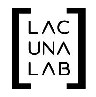
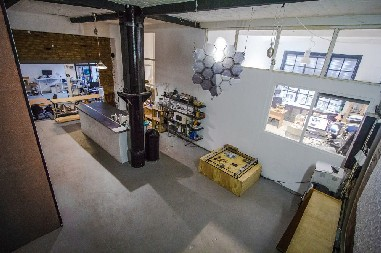

Lacuna Lab is an artist-run collaborative community and space in Kreuzberg. We are artists, designers, coders, musicians, performers, and creative practitioners working at the intersections of art, technology and science.

Lacuna Lab e.V.i.Gr. Paul-Lincke-Ufer 44a
2.HH 1.0G
10999 Berlin

Lacuna Lab is looking for people who...
● work in the intersection of art, science and technology.
● are passionate about collaboration.
● are interested in a permanent membership and have time and energy to work towards our collective’s vision.
● enjoy being around other people :D
What we offer...
● a collective and a space to call home.
● the opportunity to work together on innovative interdisciplinary art projects, collaborations, exhibitions etc..
● a friendly community of people from all around the world. Membership costs €175 a month and includes a desk space in our studio.
Get in touch and let us know more about yourself
● What do you do?
● What are your expectations of the Lab?
● What can you offer to our community?
We look forward to learning about you and your work. Please send contact us at: info@lacunalab.org
Website: www.lacunalab.org | Twitter: twitter.com/lacunalab | Facebook: facebook.com/lacunalab